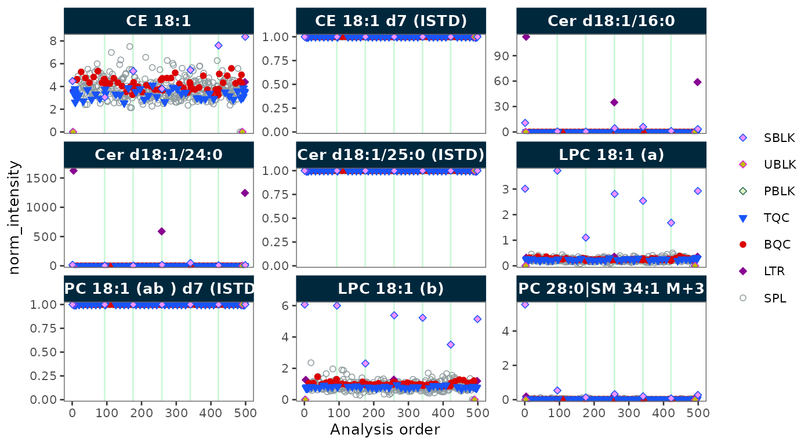
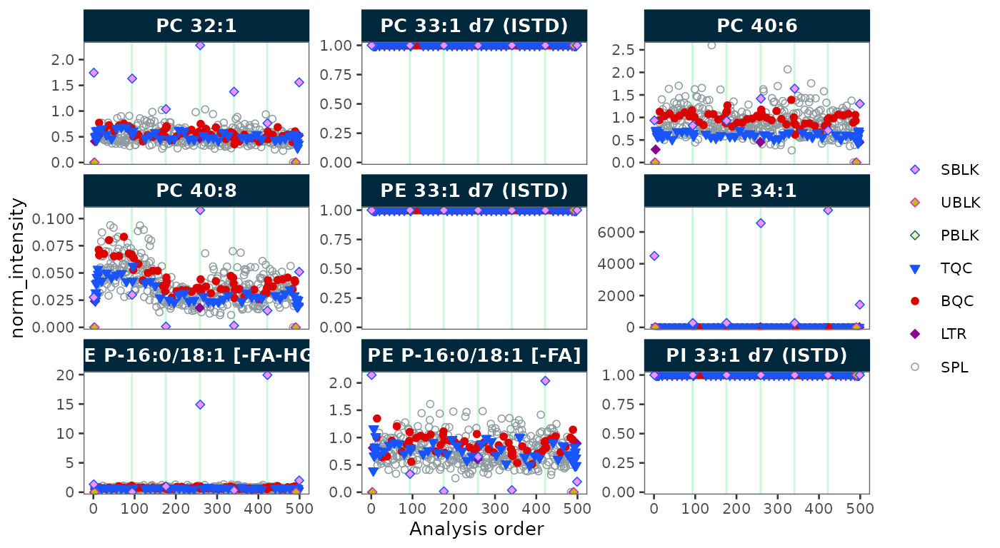
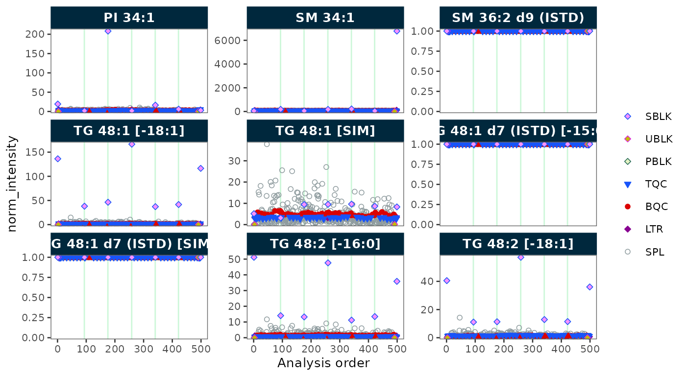
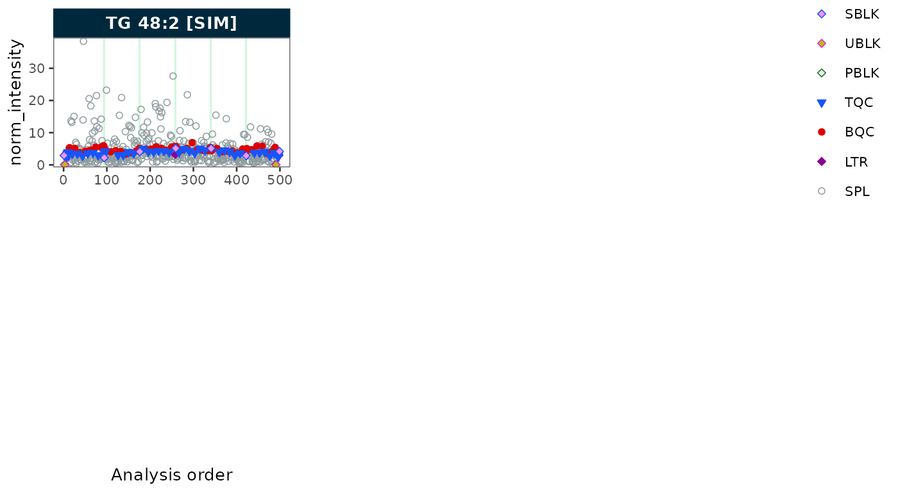

Your First Analysis
Source:vignettes/articles/tutorial-00-first-analysis.Rmd
tutorial-00-first-analysis.RmdThis walkthrough produces a normalized dataset in under 5 minutes using bundled demo data; no external files are needed.
Time: ~5 min | Level: Beginner
| Prerequisites: MRMhub installed
(check_setup() passes)
The complete workflow in one script
The complete workflow on the bundled demo data is shown below. The printed summary and plot are produced by this code.
library(mrmhub)
# 1. Import the bundled demo dataset (produced by INTEGRATOR)
demo_file <- system.file("extdata", "MRMhub_demo.tsv", package = "mrmhub")
mexp <- MRMhubExperiment()
mexp <- import_data_mrmhub(mexp, path = demo_file, import_metadata = TRUE)
mexp
# 2. Normalise each feature by its internal standard
mexp <- normalize_by_istd(mexp)
# 3. Inspect the normalised signal across the analytical run
plot_runscatter(mexp, variable = "norm_intensity")



To save the processed data to an Excel report (or a tidy CSV), add one line:
save_report_xlsx(mexp, path = "my_first_results.xlsx")Interactive alternative.
run_walkthrough() opens a point-and-click application that
validates the data, generates the equivalent workflow script, and
displays the results. The code-first workflow above remains the
reproducible path.
Step by step
The rest of this page explains each step of the script above.
Step 2: Import Demo Data
MRMhub ships with a demo dataset produced by INTEGRATOR. Import it
with import_data_mrmhub():
demo_file <- system.file("extdata", "MRMhub_demo.tsv", package = "mrmhub")
mexp <- MRMhubExperiment()
mexp <- import_data_mrmhub(mexp, path = demo_file, import_metadata = TRUE)
mexpThe result is an MRMhubExperiment object, a structured
container holding the peak area data, sample annotations, and feature
metadata.
Step 3: Explore the Data
# Dimensions: samples × features
get_analysis_count(mexp)
get_feature_count(mexp)
# First few sample annotations
head(mexp@annot_analyses)
# Feature list
get_featurelist(mexp)Step 4: Normalize by Internal Standard
Apply ISTD normalization to correct for extraction and injection variability:
mexp <- normalize_by_istd(mexp)After this step, mexp@is_istd_normalized is
TRUE. The original data is preserved in
dataset_orig.
Step 5: Visualise
Check the run sequence for signal drift:
plot_runscatter(mexp, variable = "norm_intensity")Step 6: Export
Export the processed data to Excel or CSV:
# Excel report (multiple sheets)
save_report_xlsx(mexp, path = "my_first_results.xlsx")
# Or as tidy CSV
save_dataset_csv(mexp, path = "my_first_results.csv")Next Steps
- Key Concepts — understand the data model
- Lipidomics Workflow — full lipidomics workflow
- Drift Correction — drift & batch correction
- External Calibration — quantitative assay with calibration